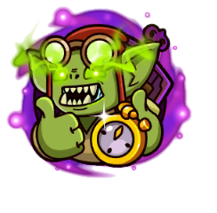

<div class="col-12 col-md-8 col-lg-6 d-flex justify-content-center flex-column">

	<h2 class="text-center">Калькулятор яблок для портала</h2>
	<p>Выберите уровень для фарма, желаемое количество Душ и имеющиеся модификаторы</p>
	<form class="form pt-4 row" [formGroup]="form">

		<div class="px-2 d-flex flex-column col-12 col-md-4">


			<mat-form-field>
				<mat-label>Уровень Портала</mat-label>
				<input matInput [(ngModel)]="this.default.level" type="number" value="2" formControlName="portalLevel"
					autocomplete="off" />

				<!-- <button mat-button *ngIf="false" matSuffix mat-icon-button aria-label="Clear" (click)="value = ''">
							<mat-icon>close</mat-icon>
					</button> -->
				<mat-error
					*ngIf="form.get('portalLevel').hasError('max') || form.get('portalLevel').hasError('min') || form.get('portalLevel').hasError('pattern')">
					Введите уровень от 1 до 125 оО
				</mat-error>
			</mat-form-field>

			<mat-form-field>
				<mat-label>Необходимое количество душ</mat-label>
				<input matInput [(ngModel)]="this.default.goalSouls" type="number" value="2" formControlName="goalSouls"
					autocomplete="off" />
				<mat-error *ngIf="form.get('goalSouls').hasError('max')">
					Вы же не собираетесь скупить вообще весь портал?
				</mat-error>
				<mat-error *ngIf="form.get('goalSouls').hasError('min') || form.get('goalSouls').hasError('pattern')">
					Хотя бы 100 душ
				</mat-error>
			</mat-form-field>

			<mat-checkbox [(ngModel)]="!!this.default.isStartedSouls" [ngModelOptions]="{standalone: true}" name="checkbox">
				Уже есть души?</mat-checkbox>


			<mat-form-field *ngIf="this.default.isStartedSouls">
				<mat-label>Имеющиеся Души</mat-label>
				<input matInput [(ngModel)]="this.default.startedSouls" type="number" value="2" formControlName="startedSouls"
					pattern="\d{1,}" />
				<mat-error *ngIf="form.get('startedSouls').hasError('max')">
					Сохранили души с прошлых порталов?
				</mat-error>
				<mat-error *ngIf="form.get('startedSouls').hasError('min') || form.get('startedSouls').hasError('pattern')">
					Хотя бы 100 душ
				</mat-error>
			</mat-form-field>
<!-- 
			<mat-form-field *ngIf="this.default.isStartedSouls">
				<mat-label>Имеющиеся Очень Темные Души</mat-label>
				<input matInput [(ngModel)]="this.default.startedDarkerSouls" type="number" value="2"
					formControlName="startedDarkerSouls" pattern="\d{1,}" />
				<mat-error *ngIf="form.get('startedDarkerSouls').hasError('max')">
					Вы же не собираетесь скупить вообще весь портал?
				</mat-error>
				<mat-error
					*ngIf="form.get('startedDarkerSouls').hasError('min') || form.get('startedDarkerSouls').hasError('pattern')">
					Хотя бы 100 душ
				</mat-error>
			</mat-form-field> -->
		</div>


		<div class="d-flex flex-column justify-content-between col-12 col-md-4 px-2">
			<mat-form-field appearance="fill">
				<mat-label>Уровень квартала</mat-label>
				<mat-select [(ngModel)]="this.default.hunters" [ngModelOptions]="{standalone: true}" name="food">
					<mat-option *ngFor="let levels of this.data.hunters" [value]="levels.value">
						{{levels.viewValue}}
					</mat-option>
				</mat-select>
			</mat-form-field>


			<mat-form-field appearance="fill">
				<mat-label>Уровень Знамя</mat-label>
				<mat-select [(ngModel)]="this.default.banner" [ngModelOptions]="{standalone: true}" name="food">
					<mat-option *ngFor="let banner of this.data.banner" [value]="banner.value">
						{{banner.viewValue}}
					</mat-option>
				</mat-select>
			</mat-form-field>


			<mat-form-field appearance="fill">
				<mat-label>Множитель душ</mat-label>
				<mat-select [(ngModel)]="this.default.multiply" [ngModelOptions]="{standalone: true}" name="food">
					<mat-option *ngFor="let multiply of this.data.x_buff" [value]="multiply.value">
						{{multiply.value}}
					</mat-option>
				</mat-select>
			</mat-form-field>
		</div>

		<div class="col-12 col-md-4 px-2 flex-column d-flex align-items-center">
			
			<mat-label>{{this.showResult()}}</mat-label>
		</div>

	</form>
</div>